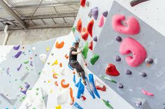

This website contains some basic information you should know to start bouldering. This includes:
Bouldering routes include a wide range of holds and it is essential to know how to climb each one. The link above also contains information about basic vocabulary that climbers use.
The image below is a link. Try to click on it.
Techniques and Tricks: Techniques and tricks that climbers use to ascend climbs will be showcased here.
To ensure that everybody has a safe and fun time, important rules, guidelines, and etiquette exist. Click on the link above to dive deeper into the specifics.
